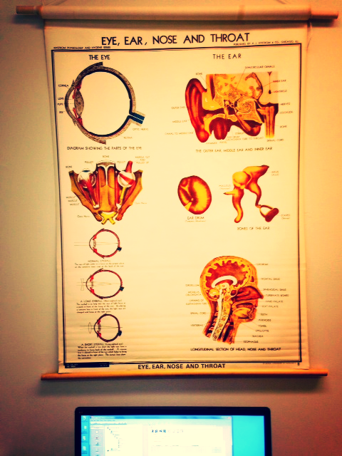

Speech and Psycholinguistics Lab at York
- The SAP lab occupies two rooms in Founders College. We have a large selection of reference material (books and journals) on linguistics, speech acoustics, cognition and perception, and statistics. Users are welcome to borrow printed matter and should maintain correspondence with the lab manager if anything is taken out.
- For recording, users can either use the sound isolation booth located on the first floor of the South Wing of the Ross Building, or record in the lab itself. Each computer in the lab is equipped with recording software (Audacity and Praat). Please ask the lab manager to show you how to record.
- The lab has 3 MacOS and 2 Windows machines. Each of these workstations is equipped with Sennheiser headphones and updated versions of relevant software:
- Audacity: for recording and editing
- Praat: for recording and analysis
- PsychoPy: for experiment presentation
- E-Prime (Windows only): for experiment presentation (though we like to use PsychoPy because it is more stable)
- R: for statistical analysis (we use R-studio for analysis and visualization, please talk to Prof. Narayan for installing relevant packages)
- The lab has an SR Research Eyelink II for visual world paradigm studies.
- We also have a cabinet full of portable recording devices (Zoom H4n) and two wireless lapel mice (Line6) for field recording. Please check with the lab manager if you would like to to borrow any recording hardware.
- The lab also has the ability to transfer various antiquated (but good sounding!) analog media formats on 1/4" reel-to-reel, cassette, LP, and 78rpm. Let us know if you would like to use any of these facilities.
